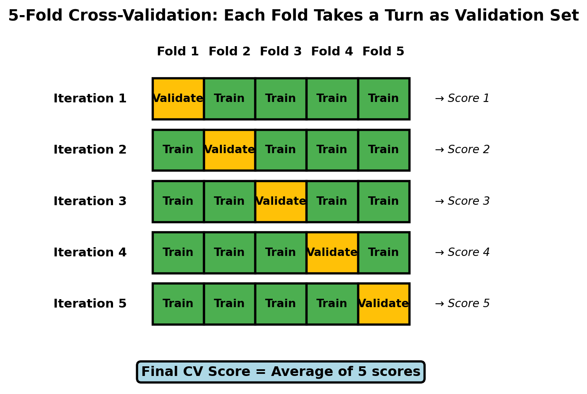
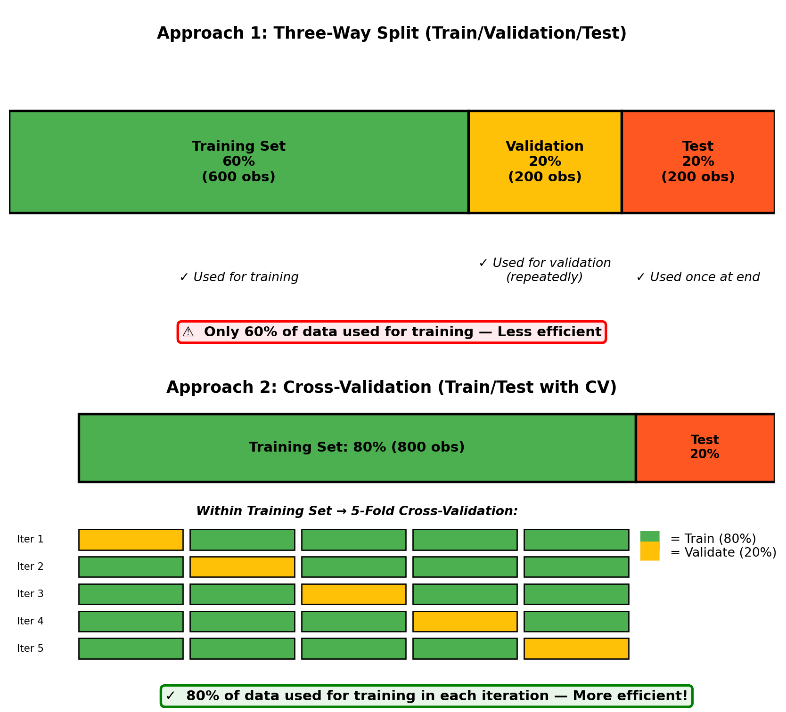

Let’s start with an uncomfortable truth: we’ve been breaking a fundamental rule of machine learning throughout Chapters 25-27. Remember back in Module 8 when you learned the golden rule: “Don’t touch the test set until you’ve selected your final model”? Well, every time you compared different max_depth values, tuned hyperparameters, or selected between models based on test set performance, you were peeking at the test set—and each peek made your test scores less trustworthy.
This isn’t a criticism of what you’ve learned so far. In fact, understanding the simple train/test split was an essential foundation. But now you’re ready for the professional approach that data scientists use in production: cross-validation. This technique solves a critical problem: how do you honestly compare models and tune hyperparameters without contaminating your test set?
NoteExperiential learning
Imagine you’re studying for an exam. Your professor gives you a practice test to help you prepare. You take it, see which questions you got wrong, study those topics more, and take the practice test again. You repeat this several times, adjusting your studying based on the practice test results.
Now imagine your professor uses that same practice test as the actual exam. Your score would be artificially inflated—it wouldn’t reflect how well you’d perform on truly new questions. You’ve essentially “overfit” to that specific practice test.
This is exactly what happens when you repeatedly use test set performance to guide modeling decisions. By the end of this chapter, you’ll learn how cross-validation gives you unlimited “practice tests” while keeping your final exam (test set) pristine and trustworthy.
This chapter addresses a crucial gap between textbook theory and real-world practice. You’ll learn why the simple workflows from previous chapters were pedagogically useful but need refinement for production work, and more importantly, you’ll learn the proper workflow that ensures your model performance estimates are honest and reliable.
By the end of this chapter, you will be able to:
Explain why repeatedly evaluating models on the test set leads to test set contamination and optimistically biased performance estimates
Describe how cross-validation solves the validation problem by rotating through different subsets of the training data
Visualize and explain how k-fold cross-validation works, including how data is split and how models are trained/validated across folds
Implement cross-validation in scikit-learn using cross_val_score() for single metrics and cross_validate() for multiple metrics
Compare multiple models using cross-validation scores instead of test set performance
Choose appropriate values for k (number of folds) based on dataset size and computational constraints
Interpret cross-validation results, including mean scores and standard deviations across folds
Understand when and why to use stratified cross-validation for classification problems
Apply the five-stage proper workflow: (1) train/test split, (2) CV for model comparison, (3) select best model, (4) retrain on full training set, (5) test set evaluation ONCE
Articulate why this workflow produces trustworthy performance estimates that stakeholders can rely on
NoteFollow along in Colab
As you read through this chapter, we encourage you to follow along using the companion notebook in Google Colab (or another editor of your choice). This interactive notebook lets you run all the code examples covered here—and experiment with your own ideas.
Let’s trace back through what you’ve learned and practiced over the past few chapters. In Module 8, you learned the fundamental train/test split workflow:
# Example workflow pattern (X, y, and model would need to be defined)from sklearn.model_selection import train_test_split# Split data into train and test setsX_train, X_test, y_train, y_test = train_test_split( X, y, test_size=0.3, random_state=42)# Train on training setmodel.fit(X_train, y_train)# Evaluate on test set ONCE at the endtest_score = model.score(X_test, y_test)
The logic was clear and sensible:
Training set: Where your model learns patterns
Test set: Completely held-out data to evaluate how well patterns generalize
Critical rule: Don’t touch the test set until you’ve made all your modeling decisions
This test set acts as a proxy for future, unseen data. If your model performs well on the test set, you can be confident it will perform well in production.
The peeking problem
But then in Chapters 21-27, you started building real models and facing real decisions. And here’s where theory met practice:
Chapter 25 (Decision Trees): You needed to choose a good value for max_depth. So naturally, you tried several options:
####################################### Psuedocode: For demonstration only ######################################## Try shallow treedt_shallow = DecisionTreeClassifier(max_depth=3)dt_shallow.fit(X_train, y_train)score_shallow = dt_shallow.score(X_test, y_test) # ← First peek!# Try deeper treedt_deep = DecisionTreeClassifier(max_depth=10)dt_deep.fit(X_train, y_train)score_deep = dt_deep.score(X_test, y_test) # ← Second peek!# Compare and choose the winnerif score_deep > score_shallow: best_model = dt_deep # Chose based on test set performance
Chapter 26 (Random Forests): You wanted to tune hyperparameters, so you evaluated different configurations:
####################################### Psuedocode: For demonstration only ######################################## Try default Random Forestrf_default = RandomForestClassifier()rf_default.fit(X_train, y_train)score_default = rf_default.score(X_test, y_test) # ← Another peek# Try tuned versionrf_tuned = RandomForestClassifier(n_estimators=300, max_depth=20)rf_tuned.fit(X_train, y_train)score_tuned = rf_tuned.score(X_test, y_test) # ← Yet another peek# Keep the better onebest_model = rf_tuned if score_tuned > score_default else rf_default
Each evaluation felt necessary—how else would you make informed decisions?
ImportantThe core problem
But here’s the problem: every time you used test set performance to make a decision, you implicitly incorporated information from the test set into your model selection process.
Why peeking matters
Think about what’s really happening when you repeatedly evaluate on the test set:
Try model A → test accuracy = 85%
Try model B → test accuracy = 87%
Try model C → test accuracy = 86%
Choose model B because it scored highest on the test set
Report “test accuracy” = 87%
But is that 87% an honest estimate of performance on truly new data? No! You selected model B specifically because it happened to perform best on this particular test set. Model B might have just gotten lucky with these specific test observations.
ImportantTest set contamination
Once you’ve used test set performance to make decisions, that test set is “contaminated”—it’s no longer a pure measure of generalization. You’ve essentially tuned your model selection to this specific test set, which is a subtle form of overfitting.
The consequence: Your reported test performance is optimistically biased. It will likely be higher than the true performance you’ll see on genuinely new data in production.
This is similar to the studying-for-an-exam analogy: if you see the exam questions beforehand and adjust your studying accordingly, your exam score won’t accurately reflect your knowledge—it’ll be inflated by your exposure to those specific questions.
A realistic scenario
Let’s make this concrete with a realistic example that demonstrates exactly how test set contamination happens in practice.
Imagine you’re building a customer churn prediction model for a subscription-based business. You have 1,000 customers in your dataset, and you want to find the best random forest configuration by trying different combinations of n_estimators and max_depth. This is a completely normal modeling task—you need to explore the hyperparameter space to find what works best.
The problem is, if you evaluate each of these 20 configurations on your test set to decide which is “best,” you’re peeking at the test set 20 times. By the end of this process, you’ve selected a configuration specifically because it performed well on these particular test observations. Some of that performance is genuine model quality, but some is just random luck—the model happened to align well with the quirks of this specific test set.
# You're building a customer churn prediction model# You try 20 different hyperparameter combinationsbest_test_score =0best_config =Nonefor n_estimators in [50, 100, 200, 300]:for max_depth in [5, 10, 15, 20, None]: rf = RandomForestClassifier( n_estimators=n_estimators, max_depth=max_depth, random_state=42 ) rf.fit(X_train, y_train) test_score = rf.score(X_test, y_test) # Peeking 20 times!if test_score > best_test_score: best_test_score = test_score best_config = (n_estimators, max_depth)print(f"Best config: {best_config}")print(f"Test accuracy: {best_test_score:.3f}") # Is this trustworthy?
Best config: (300, 20)
Test accuracy: 0.910
The result: When you deploy this model in production, you might see something like:
Test set accuracy (during development): 91%
Production accuracy (on new customers): 85%
That 6-percentage-point drop is partly because you overfit to the test set through repeated evaluation. Your test score gave you false confidence.
But we had to make decisions somehow
This might feel frustrating. You had legitimate questions that needed answers:
Which max_depth value works best?
Should I use 100 or 300 trees in my Random Forest?
Does adding this feature improve performance?
Which model architecture performs best?
You couldn’t answer these questions without evaluating somewhere. So what’s the solution?
TipCross-validation to the rescue!
This is precisely the dilemma that cross-validation solves. It gives you a way to answer all these questions—to compare, tune, and select—without ever touching your test set. Let’s see how.
28.2 The ideal solution: A three-way split
Before we get to cross-validation, let’s understand the ideal (but not always practical) solution: splitting your data into three parts instead of two.
Train, validation, and test sets
The proper workflow should look like this:
Full Dataset
↓
├─── Training Set (60%) ← Build models here
├─── Validation Set (20%) ← Compare models here
└─── Test Set (20%) ← Final evaluation ONCE
Each portion has a distinct purpose:
Training set: This is where your models learn. You fit models using only this data.
Validation set: This is your “practice exam”—you can look at it as many times as you want during development. Use it to:
Compare different models
Tune hyperparameters
Select features
Make any other modeling decisions
Test set: This remains completely locked away until the very end. You evaluate your final chosen model on it exactly once to get an honest estimate of production performance.
The workflow in practice
Here’s how the three-way split workflow operates:
flowchart TD
A["📊 Complete Dataset<br/>(1000 observations)"] --> B["Split into 3 parts"]
B --> C["🎯 Training Set<br/>60% (600 obs)<br/><br/>Purpose: Build models"]
B --> D["🔍 Validation Set<br/>20% (200 obs)<br/><br/>Purpose: Compare & tune"]
B --> E["🔒 Test Set<br/>20% (200 obs)<br/><br/>Purpose: Final evaluation"]
C --> F["Model Development Phase"]
F --> G["Try Model 1<br/>Train on Training Set"]
F --> H["Try Model 2<br/>Train on Training Set"]
F --> I["Try Model 3<br/>Train on Training Set"]
F --> J["Try Model 4<br/>Train on Training Set"]
G --> K["Evaluate on<br/>Validation Set"]
D --> K
H --> K
I --> K
J --> K
K --> L["Select Best Model<br/>based on validation scores"]
L --> M["Retrain best model<br/>on full Training Set"]
E --> N["Final Evaluation Phase"]
M --> N
N --> O["🎉 Evaluate ONCE on Test Set<br/>Get trustworthy performance estimate"]
style A fill:#e1f5fe
style C fill:#c8e6c9
style D fill:#fff9c4
style E fill:#ffccbc
style F fill:#f3e5f5
style K fill:#fff9c4
style L fill:#c8e6c9
style O fill:#c8e6c9
Key points illustrated above:
Training set (60%): Used repeatedly to train different model candidates
Validation set (20%): Used repeatedly to compare and select among models—this prevents test set contamination
Test set (20%): Locked away and used exactly once at the end for final, honest evaluation
This solves the contamination problem perfectly. You can peek at the validation set as many times as you want—try hundreds of models if you like—without compromising the integrity of your test set.
The catch: Data efficiency
This approach is conceptually perfect but has a practical problem: it requires splitting your data into three parts, which can leave you with insufficient data for each purpose.
Consider a medium-sized dataset with 1,000 observations:
Now you’re only training on 600 observations when you could have used 800 (if you didn’t need a separate validation set). For many real-world problems, especially with limited data, this sacrifice is significant:
Fewer training examples can hurt model performance—you’re not giving your model enough data to learn patterns effectively
Smaller validation set might give unreliable estimates—200 observations might not be representative, leading to poor model selection
Smaller test set also reduces reliability of your final evaluation
WarningWhen data is scarce
With small-to-medium datasets (thousands of observations, not millions), the three-way split can be wasteful. You want to use as much data as possible for training while still maintaining honest evaluation.
This tension—needing validation without sacrificing training data—is what makes cross-validation so valuable.
The question becomes: Is there a way to get the benefits of a validation set without actually reserving a separate portion of data? The answer is yes, and it’s called cross-validation.
28.3 Cross-validation: The clever solution
Cross-validation is one of the most elegant ideas in machine learning. It solves both problems at once: it gives you honest performance estimates (like a validation set) while using your data efficiently (not wasting observations on a separate validation set).
The big idea
Here’s the key insight: what if, instead of holding out one fixed validation set, we rotate which portion of the training data acts as validation? With cross-validation, you never create a separate validation set. Instead, you:
Keep your test set completely separate (just like before)
Within your training set, temporarily designate different portions as “validation” in rotation
Each observation gets used for both training and validation (just at different times)
The workflow looks like this:
Full Dataset
↓
├─── Training Set (80%) ← Use for BOTH training AND validation via CV
└─── Test Set (20%) ← Keep locked away until the end
Notice you only split once (train/test), not twice (train/val/test). The magic happens within the training set through a process called k-fold cross-validation.
How k-fold cross-validation works
The term “k-fold” refers to dividing your training data into k equal-sized pieces (called “folds”). The letter k is simply a number you choose—typically 5 or 10—that determines how many pieces to split your training data into.
Here’s the brilliant part: instead of setting aside one fixed portion of your training data as a validation set (which you’d never use for training), k-fold cross-validation rotates which fold acts as the validation set. Each fold gets a turn being the validation set while the remaining folds are used for training. This means:
Every observation in your training set gets used for validation exactly once
Every observation gets used for training in k-1 iterations
You end up with k different performance estimates that you can average together
This rotation strategy maximizes data efficiency (you’re using more data for training than with a fixed validation set) while still providing honest performance estimates (each validation fold is held out during its evaluation).
Let’s walk through a concrete example using 5-fold CV (k=5), which is the most common choice:

Visual representation of 5-fold cross-validation showing how each fold takes a turn as the validation set
What’s happening in this visualization:
Initial split: The training set is divided into 5 equal-sized folds (shown across the top)
Rotation pattern: In each of the 5 iterations (rows):
One fold serves as the validation set (amber/yellow)
The remaining four folds serve as the training set (green)
Each iteration produces one validation score
Data efficiency: Notice that every fold is used for training in 4 out of 5 iterations (80% utilization) and for validation in 1 out of 5 iterations
Final estimate: The 5 validation scores are averaged to produce the final cross-validation score—a reliable estimate of model performance
Why this is brilliant
Cross-validation achieves several goals simultaneously:
TipThe magic of CV
Data efficiency: Every observation in your training set gets used for training (in 4 out of 5 folds). You’re training on 80% of your training set each time, not just 60%.
Robust validation: Every observation also gets used for validation (in 1 out of 5 folds). You’re validating on different portions of data, so your performance estimate is based on the entire training set.
Multiple evaluations: You get 5 different performance estimates from 5 different validation splits, then average them. This is much more reliable than a single validation score from a fixed validation set.
Variance estimates: The variation across folds tells you how stable your model is. High variation suggests your model’s performance is sensitive to which data it’s trained on.
Test set remains pristine: All of this happens within the training set. Your test set is never touched, so it remains a completely honest final evaluation.
Let’s make this concrete with an example:
from sklearn.model_selection import cross_val_scorefrom sklearn.ensemble import RandomForestClassifier# Assume X_train, y_train from your train/test split# Test set (X_test, y_test) remains untouched# Create a modelrf = RandomForestClassifier(n_estimators=100, random_state=42)# Perform 5-fold cross-validation on training setcv_scores = cross_val_score(rf, X_train, y_train, cv=5, scoring='accuracy')print(f"Fold scores: {cv_scores}")print(f"Mean CV accuracy: {cv_scores.mean():.3f}")print(f"Std deviation: {cv_scores.std():.3f}")
You’ve now evaluated your model on the training set 5 different ways, getting a robust performance estimate (87.5% ± 1.2%) without ever touching the test set.
Comparing to the validation set approach
Let’s contrast the two approaches side-by-side to see why cross-validation is more efficient:

Comparison of three-way split vs. cross-validation approaches, showing data efficiency
Key differences highlighted:
Data efficiency:
Three-way split uses only 60% of data for training (400 fewer observations)
Cross-validation uses 80% of data for training in each fold (maximizes learning)
Validation robustness:
Three-way split relies on a single fixed validation set (200 observations)
Cross-validation averages across 5 different validation sets (all 800 training observations participate)
Flexibility:
Three-way split: Once you set aside 200 observations for validation, you can never use them for training
Cross-validation: Every observation contributes to both training and validation (just at different times)
The cross-validation approach gives you the best of both worlds: honest performance estimates AND efficient use of your limited data.
28.4 Proper workflow: What we should have done
Now that you understand cross-validation, here’s the proper pattern you’ll use going forward when comparing models or tuning hyperparameters:
TipThe proper workflow template
Create train/test split and lock the test set away
Compare models using cross-validation on training set ONLY
Select best model based on CV scores (not test scores!)
Retrain best model on all training data
Evaluate on test set EXACTLY ONCE
####################################### Psuedocode: For demonstration only #######################################from sklearn.model_selection import train_test_split, cross_val_score# Step 1: Split and lock test setX_train, X_test, y_train, y_test = train_test_split( X, y, test_size=0.2, random_state=42, stratify=y)# Step 2: Compare models using CV on training setmodel1 = SomeModel(params1)model2 = SomeModel(params2)cv_scores1 = cross_val_score(model1, X_train, y_train, cv=5)cv_scores2 = cross_val_score(model2, X_train, y_train, cv=5)# Step 3: Select best based on CVbest_model = model1 if cv_scores1.mean() > cv_scores2.mean() else model2# Step 4: Retrain on all training databest_model.fit(X_train, y_train)# Step 5: Evaluate on test set ONCEfinal_test_score = best_model.score(X_test, y_test)
Key point: All model comparisons and hyperparameter tuning use CV on the training set. The test set is only touched once at the very end, making the final test score a trustworthy estimate of production performance.
28.5 Implementing cross-validation in scikit-learn
Now that you understand the conceptual foundation, let’s dive into the practical details of implementing cross-validation using scikit-learn. The library provides several functions and options to fit different needs.
For the examples in this section, we’ll use the Default dataset from ISLP, that we’ve seen in previous chapters:
Code
import pandas as pdfrom ISLP import load_datafrom sklearn.model_selection import train_test_split# Load the Default datasetDefault = load_data('Default')# Prepare features and targetX = pd.get_dummies(Default[['balance', 'income', 'student']], drop_first=True)y = (Default['default'] =='Yes').astype(int)# Create train/test split (lock away test set)X_train, X_test, y_train, y_test = train_test_split( X, y, test_size=0.2, random_state=42, stratify=y)print(f"Training set: {len(X_train)} observations")print(f"Test set: {len(X_test)} observations")print(f"Default rate: {y_train.mean():.1%}")
Training set: 8000 observations
Test set: 2000 observations
Default rate: 3.3%
Basic usage: cross_val_score()
The simplest and most common function is cross_val_score(), which performs k-fold CV and returns the scores from each fold:
from sklearn.model_selection import cross_val_scorefrom sklearn.ensemble import RandomForestClassifier# Create your modelmodel = RandomForestClassifier(n_estimators=100, random_state=42)# Perform 5-fold cross-validationcv_scores = cross_val_score( estimator=model, # Your model X=X_train, # Training features y=y_train, # Training labels cv=5, # Number of folds scoring='accuracy'# Metric to compute)print(f"Fold scores: {cv_scores}")print(f"Mean: {cv_scores.mean():.3f}")print(f"Std Dev: {cv_scores.std():.3f}")
Each value represents the accuracy on one validation fold. The mean gives you the overall estimate, and the standard deviation tells you how variable the performance is across folds.
Choosing scoring metrics
The scoring parameter determines what metric to compute. The appropriate choice depends on your problem type.
# Accuracy (default for classifiers)cross_val_score(model, X_train, y_train, cv=5, scoring='accuracy')# F1 score (good for imbalanced classes)cross_val_score(model, X_train, y_train, cv=5, scoring='f1')# ROC AUC (measures ranking quality)cross_val_score(model, X_train, y_train, cv=5, scoring='roc_auc')# Precision and recallcross_val_score(model, X_train, y_train, cv=5, scoring='precision')cross_val_score(model, X_train, y_train, cv=5, scoring='recall')
For regression:
# R² score (default for regressors)cross_val_score(model, X_train, y_train, cv=5, scoring='r2')# Negative mean squared errorcross_val_score(model, X_train, y_train, cv=5, scoring='neg_mean_squared_error')# Negative mean absolute errorcross_val_score(model, X_train, y_train, cv=5, scoring='neg_mean_absolute_error')
NoteWhy “negative” for error metrics?
Scikit-learn’s CV functions are designed to maximize scores. Since lower errors are better, scikit-learn returns negative errors so that “higher is better” remains consistent. Just remember:
neg_mean_squared_error = -5.2 means MSE is actually 5.2
More negative is worse (larger error)
Less negative is better (smaller error)
Advanced: cross_validate() for multiple metrics
If you want to compute multiple metrics at once, or get more detailed information, use cross_validate():
from sklearn.model_selection import cross_validate# Evaluate multiple metrics simultaneouslycv_results = cross_validate( model, X_train, y_train, cv=5, scoring=['accuracy', 'f1', 'roc_auc'], # Multiple metrics return_train_score=True# Also get training scores)# Results is a dictionary with arrays for each metricprint(f"CV accuracy: {cv_results['test_accuracy'].mean():.3f}")print(f"CV F1: {cv_results['test_f1'].mean():.3f}")print(f"CV ROC AUC: {cv_results['test_roc_auc'].mean():.3f}")print(f"\nTraining accuracy: {cv_results['train_accuracy'].mean():.3f}")
Detecting overfitting (comparing train vs. test scores)
Analyzing fit time and score time across folds
Practical example: Comparing models with CV
Now let’s put everything together in a realistic scenario: you have multiple candidate models and need to determine which one performs best. This is one of the most common use cases for cross-validation in practice.
In this example, we’ll compare three different classification algorithms—Logistic Regression, Decision Tree, and Random Forest—to see which handles our data best. Rather than evaluating each on the test set (which would contaminate it), we’ll use 5-fold cross-validation on the training set to get honest performance estimates.
Data preparation: Create customer churn dataset
import numpy as npfrom sklearn.datasets import make_classificationfrom sklearn.model_selection import train_test_split# Create synthetic data with non-linear patternsX, y = make_classification( n_samples=1000, n_features=10, n_informative=8, n_redundant=0, n_clusters_per_class=3, # Creates non-linear decision boundaries flip_y=0.1, # Adds some noise class_sep=0.5, # Moderate class separation random_state=42)# Add polynomial interactions to create non-linear relationships# This will favor tree-based models over linear modelsX_poly = np.column_stack([ X, X[:, 0] * X[:, 1], # Interaction term X[:, 2] **2, # Squared term X[:, 3] * X[:, 4] # Another interaction])# Train/test split (lock away test set)X_train, X_test, y_train, y_test = train_test_split( X_poly, y, test_size=0.2, random_state=42, stratify=y)print(f"Training set: {len(X_train)} observations")print(f"Test set: {len(X_test)} observations (locked away)")print(f"Features: {X_train.shape[1]}")
Training set: 800 observations
Test set: 200 observations (locked away)
Features: 13
Now we’ll compare our candidate models using cross-validation. Notice how we never touch the test set during this comparison phase:
from sklearn.model_selection import cross_val_scorefrom sklearn.tree import DecisionTreeClassifierfrom sklearn.ensemble import RandomForestClassifierfrom sklearn.linear_model import LogisticRegression# Define models to comparemodels = {'Logistic Regression': LogisticRegression(max_iter=1000, random_state=42),'Decision Tree': DecisionTreeClassifier(max_depth=10, random_state=42),'Random Forest': RandomForestClassifier(n_estimators=100, random_state=42)}# Evaluate each with 5-fold CVprint("Model Comparison (5-fold CV on training set):")print("="*70)for name, model in models.items():# Compute CV scores cv_scores = cross_val_score( model, X_train, y_train, cv=5, scoring='roc_auc'# Using ROC AUC for this example ) mean_score = cv_scores.mean() std_score = cv_scores.std()print(f"{name:25s}{mean_score:.4f} (±{std_score:.4f})")print("="*70)
Model Comparison (5-fold CV on training set):
======================================================================
Logistic Regression 0.6451 (±0.0453)
Decision Tree 0.6277 (±0.0758)
Random Forest 0.7760 (±0.0494)
======================================================================
We can see that the random forest model significantlyl outperforms the logistic regression and decision tree models.
Key observations from this example:
We evaluated 3 models using cross-validation, getting reliable performance estimates
The test set was never touched during model comparison
Random Forest appears to be the best performer (highest mean ROC AUC)
The standard deviations are small, indicating consistent performance across folds
Based on these CV results, we’d select Random Forest as our final model
This pattern—define models, evaluate with CV, compare results—is the foundation of professional model development.
28.6 The complete proper workflow
Now that you understand cross-validation conceptually and practically, let’s formalize the complete workflow you’ll use for nearly every machine learning project. This five-stage process ensures you get honest performance estimates while using your data efficiently.
The five stages are:
Initial Setup: Split data into train/test and lock away the test set
Model Development: Compare models using cross-validation on training set ONLY
Select Best: Choose the best model based on CV scores (not test scores!)
Train Final Model: Retrain the selected model on ALL training data
Final Evaluation: Evaluate on test set EXACTLY ONCE to estimate production performance
The critical insight is that all experimentation happens in stages 2-4 using only the training set. The test set remains untouched until the very end, giving you an unbiased estimate of how your final model will perform on new data.
Let’s see this workflow in action with a complete example using the breast cancer dataset:
from sklearn.datasets import load_breast_cancerfrom sklearn.model_selection import train_test_split, cross_val_scorefrom sklearn.ensemble import RandomForestClassifierfrom sklearn.tree import DecisionTreeClassifierfrom sklearn.linear_model import LogisticRegression# Load datadata = load_breast_cancer()X, y = data.data, data.target# ========== STEP 1: Initial Setup ==========print("STEP 1: Initial Setup - Split data and lock away test set")print("="*60)X_train, X_test, y_train, y_test = train_test_split( X, y, test_size=0.2, random_state=42, stratify=y)print(f"Training set: {len(X_train)} samples")print(f"Test set: {len(X_test)} samples")print("🔒 Test set locked away\n")# ========== STEP 2: Model Development ==========print("STEP 2: Model Development - Compare models using CV")print("="*60)models = {'Logistic Regression': LogisticRegression(max_iter=10000),'Decision Tree': DecisionTreeClassifier(max_depth=10),'Random Forest': RandomForestClassifier(n_estimators=100, random_state=42)}cv_results = {}for name, model in models.items(): cv_scores = cross_val_score(model, X_train, y_train, cv=5) cv_results[name] = {'mean': cv_scores.mean(),'std': cv_scores.std(),'model': model }print(f"{name:25s}{cv_scores.mean():.4f} (±{cv_scores.std():.4f})")# ========== STEP 3: Select Best ==========print("\nSTEP 3: Select Best - Choose model with highest CV score")print("="*60)best_name =max(cv_results, key=lambda k: cv_results[k]['mean'])best_model = cv_results[best_name]['model']print(f"Selected model: {best_name}")# ========== STEP 4: Train Final Model ==========print("\nSTEP 4: Train Final Model - Retrain on all training data")print("="*60)best_model.fit(X_train, y_train)print(f"Trained {best_name} on {len(X_train)} training samples")# ========== STEP 5: Final Evaluation ==========print("\nSTEP 5: Final Evaluation - Test set evaluation (ONLY ONCE)")print("="*60)test_score = best_model.score(X_test, y_test)print(f"Cross-validation score (training): {cv_results[best_name]['mean']:.4f}")print(f"Test score (held-out data): {test_score:.4f}")print("\n🔓 Test set has now been used - project complete!")
STEP 1: Initial Setup - Split data and lock away test set
============================================================
Training set: 455 samples
Test set: 114 samples
🔒 Test set locked away
STEP 2: Model Development - Compare models using CV
============================================================
Logistic Regression 0.9516 (±0.0112)
Decision Tree 0.9209 (±0.0108)
Random Forest 0.9538 (±0.0235)
STEP 3: Select Best - Choose model with highest CV score
============================================================
Selected model: Random Forest
STEP 4: Train Final Model - Retrain on all training data
============================================================
Trained Random Forest on 455 training samples
STEP 5: Final Evaluation - Test set evaluation (ONLY ONCE)
============================================================
Cross-validation score (training): 0.9538
Test score (held-out data): 0.9561
🔓 Test set has now been used - project complete!
ImportantThe golden rule
Test set touches: Exactly ONE
If you find yourself evaluating on the test set more than once during model development, stop—you’re contaminating it. Go back to Stage 2 and use cross-validation instead.
This five-stage workflow is now your standard approach for any machine learning project. It ensures honest performance estimates, efficient use of data, and trustworthy models.
28.7 Choosing the right number of folds
The cv parameter controls how many folds to create. The choice involves trade-offs:
TipQuick guide to selecting k
k=5 (default choice): Use this unless you have a specific reason not to. Trains on 80% per fold, good balance of speed and reliability.
k=10: Use for smaller datasets (< 5K observations) or when you need maximum reliability. Trains on 90% per fold but takes twice as long as k=5.
k=3: Use for very large datasets (> 100K observations) where k=5 is too slow, or for rapid prototyping. Faster but less reliable.
Bottom line: When in doubt, use k=5. The important part is using cross-validation at all rather than repeatedly evaluating on the test set!
These guidelines apply to most situations, but the specific choice may vary based on your computational resources and time constraints. In practice, you’ll rarely go wrong with k=5.
Why we didn’t start with cross-validation
You might wonder: “If CV is the proper approach, why didn’t we learn it in Module 8?”
The answer: Educational scaffolding. Learning complex topics works best when you build foundations first:
Chapter 21: Learn the core concept—separate data for training and testing
Chapters 21-27: Practice building models with simple train/test splits
Chapter 28 (now): Refine to professional standards with cross-validation
By starting simple, you could focus on understanding why we separate data before learning how to do it optimally. Now you have the context to understand why CV matters and the experience to use it effectively. This progression was intentional and puts you ahead of many practitioners who still use the simpler (but problematic) approach.
28.8 Summary
This chapter equipped you with one of the most important skills in professional machine learning: honest model evaluation through cross-validation. The fundamental problem we addressed is test set contamination—repeatedly using the test set to compare models or tune hyperparameters leads to optimistically biased performance estimates. Each time you make a modeling decision based on test set performance, you’re implicitly fitting to the test set, making your test scores unreliable predictors of production performance.
Cross-validation solves this elegantly by creating a validation process entirely within your training set. Instead of setting aside a fixed validation set, k-fold cross-validation rotates through different subsets of the training data, using each fold as a validation set exactly once. This approach provides reliable validation without touching the test set, uses your training data efficiently, and produces robust estimates by averaging performance across multiple folds. In practice, k=5 provides a good balance of speed and reliability for most situations.
The proper workflow you should follow for every machine learning project consists of five stages: (1) split data into train/test and lock away the test set, (2) compare models using cross-validation on the training set only, (3) select the best model based on CV scores, (4) retrain the selected model on all training data, and (5) evaluate on the test set exactly once. This workflow ensures that all experimentation—model comparison, hyperparameter tuning, and feature selection—happens using cross-validation on the training set, keeping your test set pristine until the final evaluation.
In scikit-learn, you’ll use cross_val_score() for single metric evaluation and cross_validate() for multiple metrics simultaneously. For classification problems, scikit-learn automatically applies stratified cross-validation to ensure each fold has representative class distributions, which is especially important for imbalanced datasets.
ImportantThe Golden Rule of Model Evaluation
Test set touches = EXACTLY ONE
If you evaluate on the test set more than once during model development, you’re contaminating it. All experimentation must happen using cross-validation on the training set. This single principle separates trustworthy machine learning from wishful thinking.
Why does this matter? When you tell stakeholders “this model achieves 95% accuracy,” they need to confidently expect production performance to match your test scores. Proper cross-validation prevents costly surprises, maintains your credibility as a data scientist, and ensures models perform as expected when deployed. This is the foundation of trustworthy, production-ready machine learning.
Now that you know how to properly evaluate models, the next chapter will dive deeper into systematically finding the best hyperparameter configurations through hyperparameter tuning—a process that relies heavily on the cross-validation workflow you just mastered.
28.9 End of chapter exercises
These exercises build on your previous work from Chapters 25-27, asking you to revisit those models using the proper cross-validation workflow you learned in this chapter.
NoteExercise 1: Fixing the baseball salary predictions
In Chapter 26 Exercise 1, you built random forest models to predict baseball player salaries using the Hitters dataset. You likely compared different models by evaluating them on the test set—which we now know is problematic.
Revisit that analysis properly:
Part A: Identify the problem
Review your original code from Chapter 26 Exercise 1
Count how many times you evaluated models on the test set
Explain why repeatedly using the test set for model comparison is problematic
Part B: Implement proper workflow
Use the same train/test split you used originally (for fair comparison)
Compare at least 4 different model configurations using 5-fold CV on the training set:
Decision tree with tuned depth
Random Forest with default parameters
Random Forest with tuned n_estimators
Random Forest with tuned max_depth and min_samples_split
For each model, report mean CV score and standard deviation
Select the best model based on CV scores
Train final model on full training set
Evaluate on test set ONCE
Part C: Compare approaches
Compare the “best” test score from your original Chapter 26 work (where you peeked at test set) to the honest test score from the proper workflow
Are they different? If so, explain why
Which estimate would you trust for predicting production performance? Why?
Part D: Check stability
Repeat the CV model comparison using k=3 and k=10
Does the same model win under different k values?
How much do the CV estimates change?
What does this tell you about model stability?
NoteExercise 2: Proper default risk assessment
In Chapter 26 Exercise 2, you built random forests to predict credit card default using the Default dataset. Now implement the proper evaluation workflow.
Your tasks:
Part A: Clean slate with proper workflow
Start fresh with the Default dataset
Create train/test split (80/20, stratified by default status)
Define 5 different models to compare:
Logistic Regression (baseline)
Decision Tree (try two different depths)
Random Forest (default parameters)
Random Forest (tuned parameters of your choice)
Use 5-fold stratified CV on training set to evaluate all models
Report results with mean accuracy, precision, recall, and F1 score for each
Part B: Selection and evaluation
Select the best model based on the metric that matters most for credit default prediction (consider: what’s the cost of false positives vs. false negatives?)
Train final model on full training set
Evaluate on test set once
Create a confusion matrix for the test set predictions
Interpret the results: Is the test performance consistent with CV estimates?
Part C: Feature importance revisited
Using your selected model from Part B, calculate feature importance (recall Chapter 27)
Compare the importance rankings when using CV vs. when training on full training set
Are they similar? Why or why not?
Part D: Business communication
Write a one-page memo to the bank’s risk management team explaining:
Which model you selected and why
The expected accuracy in production (and how you know it’s trustworthy)
Which features drive default predictions
Why your estimates are more reliable than if you’d repeatedly used test set
NoteExercise 3: The Ames housing challenge
Apply the complete proper workflow to the Ames housing dataset (regression).
Your tasks:
Part A: Initial setup
Load the Ames housing data
Select at least 8 features (mix of continuous and categorical)
Handle any missing values appropriately
Create train/test split (80/20)
Part B: Model comparison with CV
Compare at least 5 different approaches:
Linear regression (baseline)
Decision tree regression (tune depth via CV)
Random forest (default)
Random forest (tune n_estimators via CV)
Random forest (tune multiple hyperparameters)
For each, use 5-fold CV on training set
Use appropriate regression metrics (R², RMSE)
Create a visualization comparing models (bar chart or similar)
Part C: Hyperparameter tuning demonstration
For random forests, systematically try different values of:
n_estimators: [50, 100, 200, 300]
max_depth: [5, 10, 15, 20, None]
Use CV to evaluate each combination (20 total models)
Identify the best hyperparameter combination
Create a heatmap showing CV performance for different hyperparameter combinations
Part D: Final model evaluation
Train your selected model on full training set
Evaluate on test set once
Compare CV estimate to test performance
Create a scatter plot of predicted vs. actual prices on test set
Calculate and interpret residuals
Part E: Critical analysis
Try the same hyperparameter tuning, but select based on test set performance (wrong way)
Compare the test score from this approach to the proper approach
Is there a difference? Explain what you observe
Which approach would you trust for production deployment?
Bonus: Implement nested cross-validation (outer loop for final estimate, inner loop for hyperparameter tuning) and compare to your single train/test split approach.